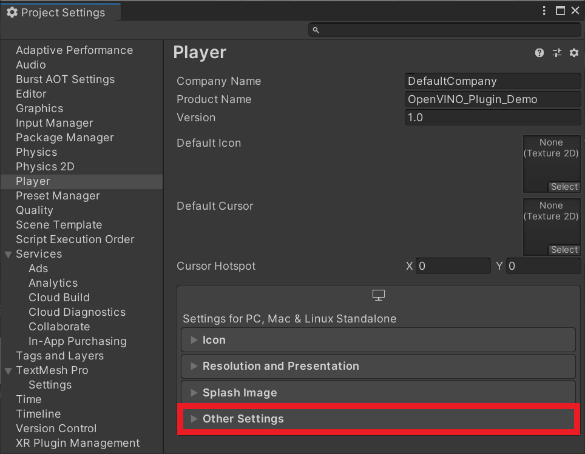

OpenVINO Plugin for Unity Tutorial Pt.3
Previous: Part 2
Overview
In Part 1 of the tutorial, we first installed Unity, OpenVINO, and its prerequisite software. We then demonstrated how to use the python conversion script included with the OpenVINO™ Toolkit to convert a pretrained model from ONNX format to the OpenVINO Intermediate Representation format. In Part 2, we walked through the steps needed to create a Dynamic link library (DLL) in Visual Studio to perform inference with the pretrained deep learning model. In this part, we will demonstrate how to access the DLL as a plugin inside a Unity project.
Create New Project
Open Unity Hub and click the New button.
Stick with the default 3D template and name the project OpenVINO_Plugin_Demo. There appears to be some compatibility issues with the Barracuda library and some of the packages included with the 2D template.
Take note of where the project will be generated and click Create.
Install Barracuda Package
To benchmark our plugin’s performance, we’ll be comparing the Intel-focused OpenVINO inference engine to Unity’s cross-platform Barracuda inference engine.
Open the Window menu at the top of the Unity Editor and select Package Manager.

In the Package Manager window, open the small dropdown menu in the left corner and select Add package from git URL....

Type com.unity.barracuda into the text box and click Add. This will install Barracuda version 1.0.4. Go ahead and close the Package manager window once Barracuda finishes installing.

Add GUI
At the moment, we cannot use our OpenVINO plugin inside the Unity editor. There appears to be a dependency conflict between one of the dependencies for OpenVINO and the Unity editor. If we look in the folder where the Unit editor executable is located, we can see that the editor also uses tbb.dll. However, it is a different version than the one required for OpenVINO.
We will need to build our Unity project without the plugin files, and then add them to the build folder where the project executable file is located.
Since we can’t use the performance metrics and controls inside the editor, we will need to add our own.
The user interface will contain the following:
- Input fields for updating the height and width dimensions for the model input
- A dropdown menu for switching between the OpenVINO and Barracuda inference engines
- A dropdown menu for switching between style transfer models
- A toggle to turn image stylization on and off
- A toggle to turn asynchronous GPU readback on and off (more on this later)
- A button to exit the application
- A console readout for debugging
- A frame rate counter to measure performance
We will be using the free Graphy asset to display frame rate and other performance metrics. Everything else is already set up in the prefab linked below.
Import Canvas Prefab
Download the Canvas.prefab file from the above link and drop it into the assets folder in the Unity editor.
Drag and drop the prefab from the Assets folder into the Hierarchy tab. A TMP Importer popup window will appear. Click Import TMP Essentials. Close the popup window once the import is complete.

If we select the Game tab, we can see the interface we just added. Don’t worry if it looks squished.

Add Graphy Package
Open the link to the Grapy Unity Store page below and click Add to My Assets. You will need to be signed in to your Unity account.
- Graphy Asset Store Page: (link)
Back in Unity, open the Package Manager again and select the Packages: In Project dropdown. Switch the selection to My Assets. You will need to be signed in to view your assets.

Type Graphy into the search bar and click download.

Click Import once the package finished downloading. An Import Unity Package popup window will appear.

Click Import in the popup window. Close the Package Manager window once the import is complete. There should now be a new folder called Graphy - Ultimate Stats Monitor in the Assets folder.
Inside the new folder, open the Prefab folder and drag the [Graphy] prefab into the Hierarchy tab. You will see that our game scene gets updated.

With the [Graphy] object still selected in the Hierarchy tab. Scroll down in the Inspector tab to Graphy Manager (Script) section. Open the Graph modules position dropdown and select TOP_LEFT. Nothing will change in the game view, but the position will be updated when we build the project.
Add Event System
We need to add an Event System so that we can send events to GameObjects and their scripts based on user input. Right click an empty space in the Hierarchy tab. Open the UI submenu and select Event System.
Make a Test Build
Before continuing, let’s make a test build to confirm our GUI looks correct. First, press Ctrl+s to save the project.
Open the File menu and select Build Settings...

Click build in the popup window. You will be prompted to select a folder to store the files generated during the build.

Create a new folder in the default location and name it Build. Click select folder.
Once the build is complete, a File Explorer window will open with the project executable selected. Double-click the executable to run it.
You should get output similar to below. The buttons are not connected to any code just yet, so you will need to press Alt+F4 to exit the application.
Create Video Player
For this demo we’ll just have a video file play in the background. While this demo can run on older integrated graphics, the frame rate would not be high enough to interact with a game environment. The newer discrete GPUs from Intel would be needed for playable frame rates. Since those are not widely available at the time of writing, we’ll stick with a video.
Import Video Files
We’ll be using this video available on Pexels, a free stock photos & videos site. Download the video in Full HD resolution.
-
Note: Renamed to
pexels_woman_dancing
Create the Videos Folder
In the Assets window, right-click an empty space, select the Create option, and click Folder. Name the folder Videos.
Double-click the Videos folder to open it.
Add Video Files
Drag and drop the video file from the file explorer into the Videos folder.

Create the Screen GameObject
We need to make a “screen” in Unity to watch the video. We’ll use a Quad object for the screen. Right click an empty space in the Hierarchy tab, select the 3D Object section and click Quad. We can just name it VideoScreen.
Resize the Screen
With the VideoScreen object selected, we need to adjust the Scale parameter in the Inspector tab. Set the X value to 16 and the Y value to 9. Leave the Z value at 1.

Update Screen Material
Create a new folder in the Assets section named Materials. Inside the Materials folder, right-click an empty space and select Material from the popup menu. We’ll name the new material video.

With the VideoScreen object selected in the Hierarchy tab, open the Materials dropdown in the Inspector tab. Drag and drop the video material into the Element 0 slot.

With the VideoScreen object still selected, scroll down to the bottom of the Inspector tab and open the Shader dropdown menu. Select the Unlit option.

Select Texture from the submenu. The video screen should now be white.
Create the Video Player
In the Hierarchy tab, right-click an empty area, select the Video section, and click Video Player. This will create a new GameObject called Video Player.

Set Video Clip
Select the Video Player object in the Hierarchy tab. Then, drag and drop the pexels_woman_dancing file into the Video Clip parameter in the Inspector tab.

Make the Video Loop
Tick the Loop checkbox in the Inspector tab to make the video repeat when the project is running.

Set Render Mode
Open the Render Mode dropdown and Material Override.

Specify Renderer
With the Video Player object still selected, drag and drop the VideoScreen object from the Hierarchy tab into the Render slot in the Inspector tab.

Adjust the Camera
Before playing the video, we need to reposition and resize the Main Camera object.
Select the Main Camera object in the Hierarchy tab. Set the Y value for the Position to Y and the Z value for the Position to -9.
Finally, we need to set the Projection setting to Orthographic and adjust the Size parameter to 4.5 in the Inspector tab.
Set Up Style Transfer Code
Now, we can implement the code for using both the Barracuda and OpenVINO inference engines.
Create Style Transfer Folder
We’ll place all our additions to the project in a new asset folder called Style_Transfer. This will help keep things organized.
Import ONNX Files to Assets
Next, we need to import the original ONN file that we used earlier. This will be used by the Barracuda inference engine. Open the Style_Transfer folder and make a new folder called Models.
Drag and drop the ONNX file into the Models folder.

StyleTransferShader Compute Shader
We can perform both the preprocessing and postprocessing operations for the Barracuda model on the GPU since both the input and output are images. We’ll implement these steps in a compute shader.
Create the Asset File
Open the Style_Transfer folder and create a new folder called Shaders. Enter the Shaders folder and right-click an empty space. Select Shader in the Create submenu and click Compute Shader. We’ll name it StyleTransferShader.
image here

Remove the Default Code
Open the StyleTransferShader in your code editor. By default, the ComputeShader will contain the following.
// Each #kernel tells which function to compile; you can have many kernels
#pragma kernel CSMain
// Create a RenderTexture with enableRandomWrite flag and set it
// with cs.SetTexture
RWTexture2D<float4> Result;
[numthreads(8,8,1)]
void CSMain (uint3 id : SV_DispatchThreadID)
{
// TODO: insert actual code here!
Result[id.xy] = float4(id.x & id.y, (id.x & 15)/15.0, (id.y & 15)/15.0, 0.0);
}Delete the CSMain function along with the #pragma kernel CSMain. Next, we need to add a Texture2D variable to store the input image. Name it InputImage and give it a data type of <half4>. Use the same data type for the Result variable as well.
// Create a RenderTexture with enableRandomWrite flag and set it
// with cs.SetTexture
RWTexture2D<half4> Result;
// Stores the input image and is set with cs.SetTexture
Texture2D<half4> InputImage;Create ProcessInput Function
The style transfer models expect RGB channel values to be in the range [0, 255]. Color values in Unity are in the range [0,1]. Therefore, we need to scale the three channel values for the InputImage by 255. We’ll perform this step in a new function called ProcessInput as shown below.
// Each #kernel tells which function to compile; you can have many kernels
#pragma kernel ProcessInput
// Create a RenderTexture with enableRandomWrite flag and set it
// with cs.SetTexture
RWTexture2D<half4> Result;
// Stores the input image and is set with cs.SetTexture
Texture2D<half4> InputImage;
[numthreads(4, 4, 1)]
void ProcessInput(uint3 id : SV_DispatchThreadID)
{
Result[id.xy] = half4((InputImage[id.xy].x * 255.0h),
(InputImage[id.xy].y * 255.0h),
(InputImage[id.xy].z * 255.0h), 1.0h);
}Create ProcessOutput Function
As we did in the DLL, we need to clamp the model output values to the range [0, 255]. We can use the built-in clamp() method to make sure all values are in the correct range. We’ll then scale the values back down to [0, 1] for Unity. We’ll perform these steps in a new function called ProcessOutput as shown below.
// Each #kernel tells which function to compile; you can have many kernels
#pragma kernel ProcessInput
#pragma kernel ProcessOutput
// Create a RenderTexture with enableRandomWrite flag and set it
// with cs.SetTexture
RWTexture2D<half4> Result;
// Stores the input image and is set with cs.SetTexture
Texture2D<half4> InputImage;
[numthreads(4, 4, 1)]
void ProcessInput(uint3 id : SV_DispatchThreadID)
{
Result[id.xy] = half4((InputImage[id.xy].x * 255.0h),
(InputImage[id.xy].y * 255.0h),
(InputImage[id.xy].z * 255.0h), 1.0h);
}
[numthreads(4, 4, 1)]
void ProcessOutput(uint3 id : SV_DispatchThreadID)
{
Result[id.xy] = half4((clamp(InputImage[id.xy].x, 0.0h, 255.0h) / 255.0h),
(clamp(InputImage[id.xy].y, 0.0f, 255.0h) / 255.0h),
(clamp(InputImage[id.xy].z, 0.0f, 255.0h) / 255.0h), 1.0h);
}Create FlipXAxis() Function
The pixel data from Unity gets flipped when loaded into the cv::Mat texture variable in the DLL. We will need to flip the image before sending it to the plugin so that it will be in the correct orientation for the model. We will need to flip the image again when we receive the update pixel data back from the DLL.
We need to know the height and width of the image to swap the pixel values. We’ll store these values in int variables. We’ll store the new (x,y) coordinates for individual pixel values in an int2 variable.
// Each #kernel tells which function to compile; you can have many kernels
#pragma kernel ProcessInput
#pragma kernel ProcessOutput
#pragma kernel FlipXAxis
// Create a RenderTexture with enableRandomWrite flag and set it
// with cs.SetTexture
RWTexture2D<half4> Result;
// Stores the input image and is set with cs.SetTexture
Texture2D<half4> InputImage;
[numthreads(4, 4, 1)]
void ProcessInput(uint3 id : SV_DispatchThreadID)
{
Result[id.xy] = half4((InputImage[id.xy].x * 255.0h),
(InputImage[id.xy].y * 255.0h),
(InputImage[id.xy].z * 255.0h), 1.0h);
}
[numthreads(4, 4, 1)]
void ProcessOutput(uint3 id : SV_DispatchThreadID)
{
Result[id.xy] = half4((clamp(InputImage[id.xy].x, 0.0h, 255.0h) / 255.0h),
(clamp(InputImage[id.xy].y, 0.0f, 255.0h) / 255.0h),
(clamp(InputImage[id.xy].z, 0.0f, 255.0h) / 255.0h), 1.0h);
}
// The height of the input image
int height;
// The width of the input image
int width;
// Stores the new location for individual pixel values
int2 coords;
[numthreads(4, 4, 1)]
void FlipXAxis(uint3 id : SV_DispatchThreadID)
{
// Update the y value for the pixel coordinates
coords = int2(id.x, height - id.y);
Result[id.xy] = float4(InputImage[coords].x, InputImage[coords].y, InputImage[coords].z, 1.0f);
}Create StyleTransfer Script
We need to make a new C# script to perform inference with the style transfer model. This script will load the model, process the input, run the model, and process the output.
Create the Asset File
Open the Style_Transfer folder and create a new folder called Scripts. In the Scripts folder, right-click an empty space and select C# Script in the Create submenu. Name the script StyleTransfer.

Add Required Namespaces
We will start by adding the required namespaces at the top of the script.
System: Contains fundamental classes and base classes that define commonly-used value and reference data types, events and event handlers, interfaces, attributes, and processing exceptions.System.Runtime.InteropServices: Provides a wide variety of members that support COM interop and platform invoke services.UnityEngine.UI: Provides access to UI elements.Unity.Barracuda: Provides access to the Barracuda library API.UnityEngine.Rendering: Provides access to the elements of the rendering pipeline.
Code
using System.Collections;
using System.Collections.Generic;
using UnityEngine;
using System;
using System.Runtime.InteropServices;
using UnityEngine.UI;
using Unity.Barracuda;
using UnityEngine.Rendering;Add Public Variables
Next, we add the publicly accessible variables inside the StyleTransfer class.
We need to add a ComputeShader variable so that we can access the StyleTransferShader we made earlier.
There are several parts of the user interface that we will need to access inside the script.
- inference engine dropdown
- compute device dropdown
- model dropdown
- stylize toggle
- useAsync toggle
- input resolution fields
- console readout text
The last public variables will be a list of NNmodel variables to store the ONNX models for the Barracuda engine and a WorkerFactory.Type variable to specify the backend for the Barracuda engine.
Code
public class StyleTransfer : MonoBehaviour
{
[Tooltip("Performs the preprocessing and postprocessing steps")]
public ComputeShader styleTransferShader;
[Tooltip("Toggle between OpenVINO and Barracuda")]
public TMPro.TMP_Dropdown inferenceEngineDropdown;
[Tooltip("Switch between the available compute devices for OpenVINO")]
public TMPro.TMP_Dropdown deviceDropdown;
[Tooltip("Switch between the available OpenVINO models")]
public TMPro.TMP_Dropdown modelDropdown;
[Tooltip("Turn stylization on and off")]
public Toggle stylize;
[Tooltip("Turn AsyncGPUReadback on and off")]
public Toggle useAsync;
[Tooltip("Text box for the input width")]
public TMPro.TMP_InputField widthText;
[Tooltip("Text box for the input height")]
public TMPro.TMP_InputField heightText;
[Tooltip("Text area to display console output")]
public Text consoleText;
[Tooltip("The model asset file that will be used when performing inference")]
public NNModel[] modelAssets;
[Tooltip("The backend used when performing inference")]
public WorkerFactory.Type workerType = WorkerFactory.Type.Auto;Create DLL Method Declarations
We need to specify the name of the .dll file. We’ll store this in a const string variable called dll.
We can indicate that a given method is from a DLL by using the DllImport attribute.
Note: The DLL functions that return string values have IntPtr as their return values here. We will use the Marshal.PtrToStringAnsi() method to get that string value at the memory location stored in the pointer.
We will be accessing the following methods from the DLL:
GetAvailableDevicesInitializeOpenVINOSetInputDimsPrepareBlobsUploadModelToDevicePerformInference
Code
// Name of the DLL file
const string dll = "OpenVINO_Plugin";
[DllImport(dll)]
private static extern IntPtr GetAvailableDevices();
[DllImport(dll)]
private static extern void InitializeOpenVINO(string modelPath);
[DllImport(dll)]
private static extern bool SetInputDims(int width, int height);
[DllImport(dll)]
private static extern void PrepareBlobs();
[DllImport(dll)]
private static extern IntPtr UploadModelToDevice(int deviceNum = 0);
[DllImport(dll)]
private static extern void PerformInference(IntPtr inputData);Add Private Variables
Lastly, we will add the variables that do not need to be publicly accessible.
The models in the modelAssets variable will need to be compiled into runtime models to perform inference with them. We’ll store the compiled models in a new list of Model variables called m_RuntimeModels.
We will create a separate inference engine interface for each of the Barracuda models. These will be stored in a list of IWorker variables called engines.
We will need to resize and flip the input image in Unity before sending it to the OpenVINO plugin. We’ll perform these operations using a temporary RenderTexture variable called tempTex.
For this tutorial, the pixel data currently needs to be downloaded from the GPU to the CPU before sending it to the plugin as well. We’ll read the pixel data from tempTex to a Texture2D variable called inputTex.
We will store the raw pixel data from inputTex in a byte[] variable called inputData. We will be passing a pointer to this array as input to the PerformInference() method.
Next , we will create two int variables to store the current width and height values for the input dimensions. We’ll give the width a default value of 960 and height a default value of 540.
We also need two string variables to store the unparsed list of available devices for OpenVINO and the current device being used.
Finally, we need four List<string> variables to store the parsed list of available devices, the file paths for the OpenVINO models, the names of the OpenVINO models, and the names of the ONNX models.
Code
// The compiled model used for performing inference
private Model[] m_RuntimeModels;
// The interface used to execute the neural network
private IWorker[] engines;
// Contains the resized input texture
private RenderTexture tempTex;
// Contains the input texture that will be sent to the OpenVINO inference engine
private Texture2D inputTex;
// Stores the raw pixel data for inputTex
private byte[] inputData;
// Input image width
private int width = 960;
// Input image height
private int height = 540;
// Unparsed list of available compute devices for OpenVINO
private string openvinoDevices;
// Current compute device for OpenVINO
private string currentDevice;
// Parsed list of compute devices for OpenVINO
private List<string> deviceList = new List<string>();
// File paths for the OpenVINO IR models
private List<string> openVINOPaths = new List<string>();
// Names of the OpenVINO IR model
private List<string> openvinoModels = new List<string>();
// Names of the ONNX models
private List<string> onnxModels = new List<string>();Define Start() Method
Here we will perform all the set up steps needed to initialize the user interface, OpenVINO plugin, and Barracuda inference engine.
Note: We are assuming that the OpenVINO models are stored in the same directory as the application executable, in a folder named models.
Method Steps
- Get the name of the CPU and GPU
- Create a list of the available OpenVINO IR models
- Update model dropdown menu with list of OpenVINO models
- Clear list of available compute devices
- Check if either the CPU or GPU is made by Intel
- if true, initialize OpenVINO and update the list of compute devices
- if false, use the Barracuda inference engine
- Initialize the
tempTexandinputTexvariables with the default resolution - Initialize the
m_RuntimeModelsvariable - Initialize the
enginesvariable - Compile the models in the
modelAssetsvariable and initialize the inference engines for each.
Code
// Start is called before the first frame update
void Start()
{
string processorType = SystemInfo.processorType.ToString();
Debug.Log($"Processor Type: {processorType}");
string graphicsDeviceName = SystemInfo.graphicsDeviceName.ToString();
Debug.Log($"Graphics Device Name: {graphicsDeviceName}");
string[] openVINOFiles = System.IO.Directory.GetFiles("models");
Debug.Log("Available OpenVINO Models");
foreach (string file in openVINOFiles)
{
if (file.EndsWith(".xml"))
{
Debug.Log(file);
openVINOPaths.Add(file);
string modelName = file.Split('\\')[1];
openvinoModels.Add(modelName.Substring(0, modelName.Length-4));
}
}
// Remove default dropdown options
modelDropdown.ClearOptions();
// Add OpenVINO models to menu
modelDropdown.AddOptions(openvinoModels);
// Select the first option in the dropdown
modelDropdown.SetValueWithoutNotify(0);
// Remove default dropdown options
deviceDropdown.ClearOptions();
// Check if either the CPU of GPU is made by Intel
if (processorType.Contains("Intel") || graphicsDeviceName.Contains("Intel"))
{
Debug.Log("Initializing OpenVINO");
InitializeOpenVINO(openVINOPaths[0]);
Debug.Log($"Setting Input Dims to W: {width} x H: {height}");
SetInputDims(width, height);
Debug.Log("Uploading IR Model to Compute Device");
currentDevice = Marshal.PtrToStringAnsi(UploadModelToDevice());
Debug.Log($"OpenVINO using: {currentDevice}");
// Get an unparsed list of available
openvinoDevices = Marshal.PtrToStringAnsi(GetAvailableDevices());
Debug.Log($"Available Devices:");
// Parse list of available compute devices
foreach (string device in openvinoDevices.Split(','))
{
// Add device name to list
deviceList.Add(device);
Debug.Log(device);
}
// Add OpenVINO compute devices to dropdown
deviceDropdown.AddOptions(deviceList);
// Set the value for the dropdown to the current compute device
deviceDropdown.SetValueWithoutNotify(deviceList.IndexOf(currentDevice));
}
else
{
// Use Barracuda inference engine if not on Intel hardware
inferenceEngineDropdown.SetValueWithoutNotify(1);
}
// Initialize textures with default input resolution
tempTex = RenderTexture.GetTemporary(width, height, 24, RenderTextureFormat.ARGB32);
inputTex = new Texture2D(width, height, TextureFormat.RGBA32, false);
// Initialize list of Barracuda models
m_RuntimeModels = new Model[modelAssets.Length];
// Initialize list of Barracuda inference engines
engines = new IWorker[modelAssets.Length];
for(int i = 0; i < modelAssets.Length; i++)
{
// Add names of available ONNX models to list
onnxModels.Add(modelAssets[i].name);
Debug.Log($"ModelAsset Name: {modelAssets[i].name}");
// Compile the model asset into an object oriented representation
m_RuntimeModels[i] = ModelLoader.Load(modelAssets[i]);
// Create a worker that will execute the model with the selected backend
engines[i] = WorkerFactory.CreateWorker(workerType, m_RuntimeModels[i]);
}
}Create ProcessImage() Method
Next, we’ll make a new method to execute the ProcessInput(), ProcessOutput() and FlipXAxis() functions in our ComputeShader. This method will take in the image that needs to be processed as well as a function name to indicate which function we want to execute. We’ll need to store the processed images in textures with HDR formats. This will allow us to use color values outside the default range of [0, 1]. As mentioned previously, the model expects values in the range of [0, 255].
Method Steps
- Get the
ComputeShaderindex for the specified function - Create a temporary
RenderTexturewith random write access enabled to store the processed image - Execute the
ComputeShader - Copy the processed image back into the original
RenderTexture - Release the temporary
RenderTexture
Code
/// <summary>
/// Process the provided image using the specified function on the GPU
/// </summary>
/// <param name="image"></param>
/// <param name="functionName"></param>
/// <returns>The processed image</returns>
private void ProcessImage(RenderTexture image, string functionName)
{
// Specify the number of threads on the GPU
int numthreads = 4;
// Get the index for the specified function in the ComputeShader
int kernelHandle = styleTransferShader.FindKernel(functionName);
// Define a temporary HDR RenderTexture
RenderTexture result = RenderTexture.GetTemporary(image.width, image.height, 24, RenderTextureFormat.ARGBHalf);
// Enable random write access
result.enableRandomWrite = true;
// Create the HDR RenderTexture
result.Create();
// Set the value for the Result variable in the ComputeShader
styleTransferShader.SetTexture(kernelHandle, "Result", result);
// Set the value for the InputImage variable in the ComputeShader
styleTransferShader.SetTexture(kernelHandle, "InputImage", image);
// Set the value for the height variable in the ComputeShader
styleTransferShader.SetInt("height", image.height);
// Set the value for the width variable in the ComputeShader
styleTransferShader.SetInt("width", image.width);
// Execute the ComputeShader
styleTransferShader.Dispatch(kernelHandle, result.width / numthreads, result.height / numthreads, 1);
// Copy the result into the source RenderTexture
Graphics.Blit(result, image);
// Release the temporary RenderTexture
RenderTexture.ReleaseTemporary(result);
}Create StylizeImage() Method
We’ll create a new method to handle stylizing individual frames from the camera with the Barracuda engine. This method will take in the src RenderTexture from the game camera and copy the stylized image back into that same RenderTexture.
Method Steps:
Resize the camera input to the
targetHeightIf the height of
srcis larger than thetargetHeight, we’ll calculate the new dimensions to downscale the camera input. We’ll then adjust the new dimensions to be multiples of 8. This is to make sure we don’t lose parts of the image after applying the processing steps with theCompute shader.Apply preprocessing steps to the image
We’ll call the
ProcessImage()method and passrTexalong with the name for theProcessInput()function in theComputeShader. The result will be stored inrTex.Execute the model
We’ll use the
engine.Execute()method to run the model with the currentinput. We can store the raw output from the model in a newTensor.Apply the postprocessing steps to the model output
We’ll call the
ProcessImage()method and passrTexalong with the name for theProcessOutput()function in theComputeShader. The result will be stored inrTex.Copy the stylized image to the
srcRenderTextureWe’ll use the
Graphics.Blit()method to copy the final stylized image into thesrcRenderTexture.Release the temporary
RenderTextureFinally, we’ll release the temporary
RenderTexture.
Code
/// <summary>
/// Stylize the provided image
/// </summary>
/// <param name="src"></param>
/// <returns></returns>
private void StylizeImage(RenderTexture src)
{
// Create a new RenderTexture variable
RenderTexture rTex;
// Check if the target display is larger than the height
// and make sure the height is at least 4
if (src.height > height && height >= 4)
{
// Adjust the target image dimensions to be multiples of 4
int targetHeight = height - (height % 4);
int targetWidth = width - (width % 4);
// Assign a temporary RenderTexture with the new dimensions
rTex = RenderTexture.GetTemporary(targetWidth, targetHeight, 24, src.format);
}
else
{
// Assign a temporary RenderTexture with the src dimensions
rTex = RenderTexture.GetTemporary(src.width, src.height, 24, src.format);
}
// Copy the src RenderTexture to the new rTex RenderTexture
Graphics.Blit(src, rTex);
// Apply preprocessing steps
ProcessImage(rTex, "ProcessInput");
// Create a Tensor of shape [1, rTex.height, rTex.width, 3]
Tensor input = new Tensor(rTex, channels: 3);
// Execute neural network with the provided input
//engine.Execute(input);
engines[modelDropdown.value].Execute(input);
// Get the raw model output
Tensor prediction = engines[modelDropdown.value].PeekOutput();
// Release GPU resources allocated for the Tensor
input.Dispose();
// Make sure rTex is not the active RenderTexture
RenderTexture.active = null;
// Copy the model output to rTex
prediction.ToRenderTexture(rTex);
// Release GPU resources allocated for the Tensor
prediction.Dispose();
// Apply post processing steps
ProcessImage(rTex, "ProcessOutput");
// Copy rTex into src
Graphics.Blit(rTex, src);
// Release the temporary RenderTexture
RenderTexture.ReleaseTemporary(rTex);
}Create SetInferenceEngine() Method
This method will be called when a new option is selected from the inference engine dropdown menu.
Method Steps
- Create a temporary list of the models for the selected inference engine
- Update the model dropdown menu with the temporary list
- Check if the model that was last used for the previous inference engine is available for the selected inference engine.
Code
/// <summary>
/// Called when an inference engine option is selected from dropdown
/// </summary>
public void SetInferenceEngine()
{
// Get the list of models for the selected inference engine
List<string> currentList = inferenceEngineDropdown.value == 0 ? openvinoModels : onnxModels;
// Remove current dropdown options
modelDropdown.ClearOptions();
// Add current inference engine models to menu
modelDropdown.AddOptions(currentList);
// Select the first option in the dropdown
modelDropdown.SetValueWithoutNotify(0);
// Get index for current model selection
int index = modelDropdown.value;
// Get the name for the previously selected inference engine model
string previousModel = inferenceEngineDropdown.value == 0 ? onnxModels[index] : openvinoModels[index];
// Check if the model for the previous inference engine is available for the current engine
if (currentList.Contains(previousModel))
{
modelDropdown.SetValueWithoutNotify(openvinoModels.IndexOf(previousModel));
}
}Create SetDevice() Method
This method will be called when a new option is selected from the device dropdown menu.
Method Steps
- Call
UploadModelToDevice()method and save the returned value tocurrentDevice
Code
/// <summary>
/// Called when a compute device is selected from dropdown
/// </summary>
public void SetDevice()
{
// Uploading model to device
currentDevice = Marshal.PtrToStringAnsi(UploadModelToDevice(deviceDropdown.value));
}Create UpdateInputDims() Method
This method will be called when the input dimensions are updated from the user interface.
Method Steps
- Get integer values from user input for the height and width input fields
- Update
tempTexandinputTexwith the new height and width values - Call
SetInputDims()method. - Call
SetDevice()method - Call
PrepareBlobs()method
Code
/// <summary>
/// Called when the input resolution is updated
/// </summary>
public void UpdateInputDims()
{
// Get the integer value from the width input
int.TryParse(widthText.text, out width);
// Get the integer value from the height input
int.TryParse(heightText.text, out height);
// Update tempTex with the new dimensions
tempTex = RenderTexture.GetTemporary(width, height, 24, RenderTextureFormat.ARGB32);
// Update inputTex with the new dimensions
inputTex = new Texture2D(width, height, TextureFormat.RGBA32, false);
// Set input resolution width x height for the OpenVINO model
Debug.Log($"Setting Input Dims to W: {width} x H: {height}");
SetInputDims(width, height);
SetDevice();
// Preparing Output Blobs
PrepareBlobs();
}Create UpdateModel() Method
This method will be called when a new option is selected from the model dropdown menu.
Method Steps
- Check if the OpenVINO engine is currently selected
- Call
InitializeOpenVINO()for selected the model. - Call
UpdateInputDims()method
- Call
Code
/// <summary>
/// Called when a model option is selected from the dropdown
/// </summary>
public void UpdateModel()
{
Debug.Log($"Selected Model: {modelDropdown.value}");
// Initialize the selected OpenVINO model
if (inferenceEngineDropdown.value == 0)
{
InitializeOpenVINO(openVINOPaths[modelDropdown.value]);
UpdateInputDims();
}
}Create UpdateTexture() Method
This method is where we will send the current pixel data from inputTex to the OpenVINO plugin. We need to use the unsafe keyword since we’ll be creating a pointer to the inputData array. Unity does not allow unsafe code by default, so we will need to enable it in the Project Settings.
Method Steps
- Pin the memory for
inputDatausing afixedstatement and get a pointer to the variable - Call the
PerformInference()method with the pointer as input
Code
/// <summary>
/// Pin memory for the input data and send it to OpenVINO for inference
/// </summary>
/// <param name="inputData"></param>
public unsafe void UpdateTexture(byte[] inputData)
{
//Pin Memory
fixed (byte* p = inputData)
{
// Perform inference with OpenVINO
PerformInference((IntPtr)p);
}
}Create OnCompleteReadback() Callback
As mentioned earlier, we currently need to download the pixel data for tempTex from the GPU to the CPU. This normally causes a pipeline stall as Unity prevents any execution on the main thread to prevent the data from changing before it has finished downloading to the CPU. This can cause a noticeable performance bottleneck that increases with the amount of pixel data there is to download.
Unity provides an alternative approach with AsyncGPUReadback that does not block the main thread. However it adds a few frames of latency. This may or may not matter depending on the specific application.
This function will be called once the AsyncGPUReadback has completed. We can load the raw pixel data from the request directly to inputTex.
Note: It may be possible to access the underlying DirectX11 texture data directly using OpenVINO’s Remote Blob API. However, this potential approach will need to be explored in a future post.
Method Steps
- Check if an error occurred during the GPU readback.
- Load the raw texture data from the readback into
inputTex. - Apply the changes to
inputTex.
Code
/// <summary>
/// Called once AsyncGPUReadback has been completed
/// </summary>
/// <param name="request"></param>
void OnCompleteReadback(AsyncGPUReadbackRequest request)
{
if (request.hasError)
{
Debug.Log("GPU readback error detected.");
return;
}
// Fill Texture2D with raw data from the AsyncGPUReadbackRequest
inputTex.LoadRawTextureData(request.GetData<uint>());
// Apply changes to Texture2D
inputTex.Apply();
}Define OnRenderImage() Method
The OnRenderImage() method gets called after the Camera has finished rendering. This gives us access to the RenderTexture for the game camera as well as the RenderTexture for the target display. It allows us to stylize the final image from the in-game that would be displayed to the user. We’ll only stylize the current frame if the stylize toggle is on.
Method Steps:
- Check if the stylize UI toggle is ticked.
- Check which inference engine is currently selected
- OpenVINO:
- Copy the
RenderTexturefor the camera totempTex - Flip the image
- Read pixel data from
tempTextoinputTexeither asynchronously or synchronously - Call
UpdateTexture()method - Load the updated raw pixel data from
inputDatatoinputTex - Apply the changes to
inputTex - Copy the pixel data from
inputTextotempTex - Flip the image again
- Copy the pixel data from
tempTexto theRenderTexturefor the camera
- Copy the
- Barracuda:
- Call
StylizeImage()method
- Call
- OpenVINO:
- Copy the
RenderTexturefor the camera to theRenderTexturefor the target display.
- Check which inference engine is currently selected
Code
/// <summary>
/// OnRenderImage is called after the Camera had finished rendering
/// </summary>
/// <param name="src">Input from the Camera</param>
/// <param name="dest">The texture for the target display</param>
void OnRenderImage(RenderTexture src, RenderTexture dest)
{
// Only stylize current frame if Stylize toggle is on
if (stylize.isOn)
{
// Check which inference engine to use
if (inferenceEngineDropdown.value == 0)
{
// Copy current frame to smaller temporary texture
Graphics.Blit(src, tempTex);
// Flip image before sending to DLL
ProcessImage(tempTex, "FlipXAxis");
if (useAsync.isOn)
{
AsyncGPUReadback.Request(tempTex, 0, TextureFormat.RGBA32, OnCompleteReadback);
}
else
{
RenderTexture.active = tempTex;
inputTex.ReadPixels(new Rect(0, 0, tempTex.width, tempTex.height), 0, 0);
inputTex.Apply();
}
// Get raw data from Texture2D
inputData = inputTex.GetRawTextureData();
// Send reference to inputData to DLL
UpdateTexture(inputData);
// Load the new image data from the DLL to the texture
inputTex.LoadRawTextureData(inputData);
// Apply the changes to the texture
inputTex.Apply();
// Copy output image to temporary texture
Graphics.Blit(inputTex, tempTex);
// Flip output image from DLL
ProcessImage(tempTex, "FlipXAxis");
// Copy the temporary texture to the source resolution texture
Graphics.Blit(tempTex, src);
}
else
{
StylizeImage(src);
}
}
Graphics.Blit(src, dest);
}Create Log() Method
Since we can’t run the project in the Unity Editor with the plugin, we don’t have direct access to the console. However, we can capture the text that gets sent to the console and display it in the user interface. This can be useful for debugging purposes.
Method Steps
- Add the most recent console text to the console readout text area.
Code
/// <summary>
/// Updates on screen console text
/// </summary>
/// <param name="logString"></param>
/// <param name="stackTrace"></param>
/// <param name="type"></param>
public void Log(string logString, string stackTrace, LogType type)
{
consoleText.text = consoleText.text + "\n " + logString;
}Define OnEnable() Method
The OnEnable() method is called when the GameObject the script is attached to becomes enabled or active.
Method Steps
- Add
Log()method toApplication.logMessageReceivedevent.
Code
// Called when the object becomes enabled and active
void OnEnable()
{
Application.logMessageReceived += Log;
}Define OnDestroy() Method
We need to manually release the resources that get allocated for the inference engine interfaces and release the temporary RenderTexture. This should be one of the last actions performed. Therefore, we will do it in the OnDestroy() method.
Method Steps
- Remove the
inputTexobject. - Release the
tempTexRenderTexture. - Release the resources allocated for each Barracuda inference engine interface.
- Remove the Log function from the
Application.logMessageReceivedevent.
Code
// Called when the MonoBehaviour will be destroyed
private void OnDestroy()
{
Destroy(inputTex);
RenderTexture.ReleaseTemporary(tempTex);
// Release the resources allocated for the inference engines
foreach (IWorker engine in engines)
{
engine.Dispose();
}
Application.logMessageReceived -= Log;
}Create Quit() Method
This method will be called when the Quit button is clicked in the user interface and will cause the application to exit.
Method Steps
- Call the
Application.Quit()method.
Code
/// <summary>
/// Called when the Quit button is clicked.
/// </summary>
public void Quit()
{
// Causes the application to exit
Application.Quit();
}That takes care of the required code for this project. However, we still need to enable unsafe code in the Project Settings for the UpdateTexture() method to be allowed.
Enable Unsafe Code
Open the Edit menu at the top of the Unity Editor and select Project Settings.

Select Player from the side menu and open the Other Settings dropdown menu.

Scroll down until you see the Allow 'unsafe' Code checkbox. Enable the setting and close the Project Settings window.

Attach Script to Camera
To run the StyleTransfer script, we need to attach it to the active Camera in the scene.
Select the Main Camera object in the Hierarchy Tab and click the little lock icon at the top of the Inspector tab. This will keep the Main Camera in the Inspector tab.

Drag and drop the StyleTransfer.cs into the bottom of the Inspector tab. Now can assign the UI elements inside the Canvas object as well as the compute shader and any ONNX models. We can do so by dragging dropping them into their associated variable spots in the Inspector tab.
The actual text area for the Console View object is located at Console View > Viewport > Content in the Hierarchy tab.
We also need to select the Compute Precompiled option from the Worker Type dropdown menu.
image here
The fully populated script should look like the image below.

Click the lock icon again to unlock the Inspector tab.
Assign UI Events
Now we just need to assign the associated methods from the StyleTransfer.cs script to the UI event triggers.
Update Button
Select the Update object inside the Canvas object.
Scroll down in the Inspector tab to the On Click section.
Drag and drop the Main Camera object into the None (Object) spot. Open the No Function dropdown menu. Open the StyleTransfer option and select UpdateInputDims().

Inference Engine Dropdown
Select the Inference Engines object inside the Canvas object.
Scroll down in the Inspector tab to the On Value Changed (Int32) section and press the little plus sign.
Drag and drop the Main Camera object into the None (Object) spot.
This time, select the StyleTransfer.SetInferenceEngine method.
Device Dropdown
Select the Device object inside the Canvas object and follow the same steps as the inference engine dropdown. This time, select the StyleTransfer.SetDevice method.

Model Dropdown
Select the Model object inside the Canvas object and follow the same steps as the device dropdown. This time, select the StyleTransfer.UpdateModel method.

Build the Project
Now we can build the completed project. Open the Build Settings window like before and press Build. We’ll use the same folder as last time. If we did everything correctly, there should not be any build errors.
Add Models Folder
Create a new folder in the same directory as the OpenVINO_Plugin_Demo.exe file and name it models.

We’ll place the .xml and .bin files for any OpenVINO models in this folder.
Add Plugins folder
Go back to the main build folder and open the OpenVINO_Plugin_Demo_Data folder.

From there, open the Plugins folder.
Copy and paste the x86_64 from earlier that contains all the .dll files and dependencies in here.
Run the Application
Now we can finally test the application. Go back to the main build folder and double-click the OpenVINO_Plugin_Demo.exe file to run it. Remember that the first time the application launches will be slow as the cache files are generated.

Conclusion
We now have a general workflow for leveraging the OpenVINO™ Toolkit inside the Unity game engine. The style transfer model used in this tutorial is extremely demanding and can push even high-end graphics cards to their limit. The performance improvements from using OpenVINO make these types of models accessible to a wider audience. Less demanding models can even be offloaded to the integrated graphics or CPU. Tools like Unity are capable of much more than making games and it is exciting to see what will be possible by combining efficient deep learning models with real-time development platforms.
Project Resources: